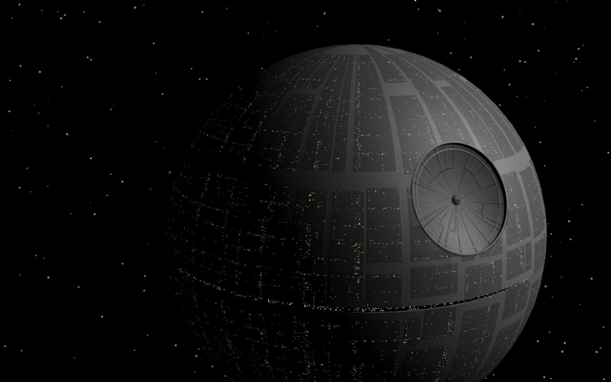

The Death Star is a massive space station and superweapon built by the Galactic Empire, measuring over 160 kilometers in diameter. It is capable of destroying entire planets with its powerful kyber crystal–powered superlaser, famously used to annihilate the planet Alderaan. Crewed by about 1.7 million personnel and thousands of droids, the Death Star was considered the ultimate symbol of Imperial power. However, its design had a critical weakness—a small thermal exhaust port—that allowed the Rebel Alliance, led by Luke Skywalker, to destroy the station in Episode IV: A New Hope. A second, even larger Death Star was under construction during Episode VI: Return of the Jedi, but it was also destroyed during the Battle of Endor
The Millennium Falcon is a Corellian YT-1300 light freighter known for its speed and agility, despite its unassuming, weathered appearance. Piloted primarily by Han Solo and his co-pilot Chewbacca, the Falcon boasts numerous modifications including a hyperdrive system, powerful shields, and quad laser cannons. It is legendary for completing the dangerous Kessel Run in less than twelve parsecs, a testament to its speed and advanced navigation systems. The Falcon played a crucial role in the Rebel Alliance’s fight against the Empire, carrying the stolen Death Star plans and helping to destroy both Death Stars. Its legacy continues in the sequel trilogy, where it is piloted by Rey.